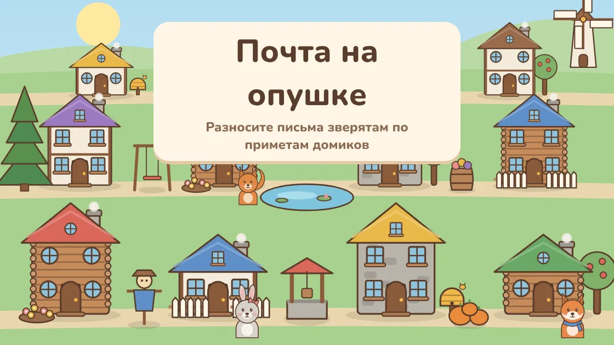
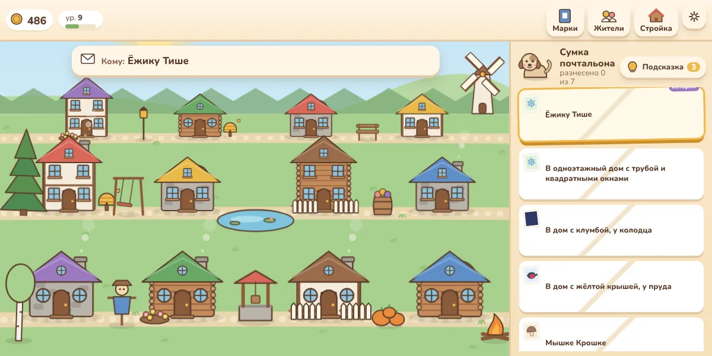
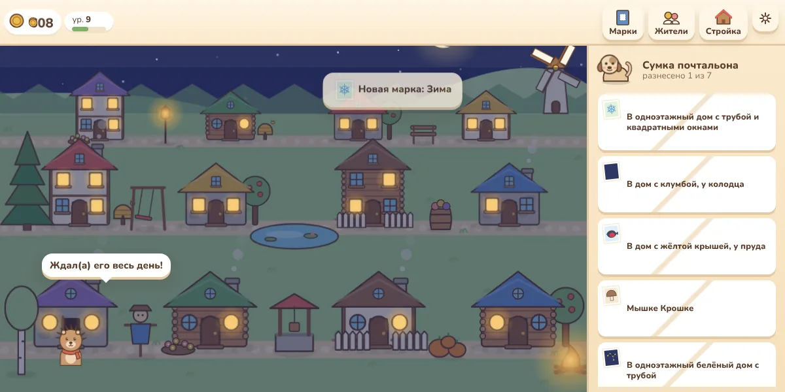
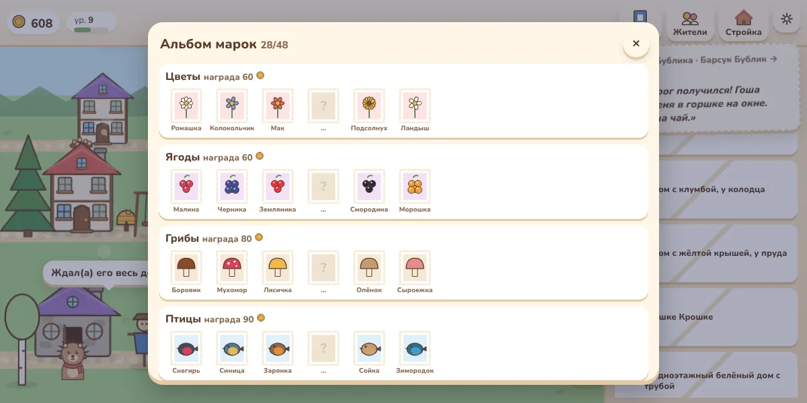

Почта на опушке — уютная игра-головоломка про почтальона во ВКонтакте
В лесной деревне нет номеров на домах — только приметы. Вы почтальон: прочитайте адрес, присмотритесь к крышам, трубам и дворикам и отнесите письмо тому, кому оно предназначено.

Об игре «Почта на опушке»
«Почта на опушке» — спокойная логическая игра для тех, кто любит внимательно смотреть и догадываться. В сумке у почтальона лежат письма, а вместо адреса на конверте — описание дома: «В двухэтажный каменный дом с синей крышей, у колодца». Нужно найти единственный домик, который подходит под все приметы, и нажать на него.
Если ошиблись — ничего страшного: житель выглянет из двери и вежливо подскажет, чем его дом не подходит («У меня крыша синяя, а в адресе — красная»). Письмо вернётся в сумку, можно попробовать снова. Таймеров нет, никто не торопит.

Что есть в игре
- Своя механика: адрес-загадка всегда подходит ровно одному дому
- Приметы усложняются с уровнем: крыша, стены, этажи, труба, окна, двор, улица, колодец и мельница, соседи
- 24 жителя-зверёнка со своим характером: ёжик-грибник, медведь-пасечник, сова-учительница, лось-поэт
- Две деревни: Опушка и Заречье за рекой
- Стройка домов для новых соседей и 24 украшения: фонари, качели, костёр, фонтан, арка из роз
- Альбом на 48 марок: цветы, ягоды, грибы, птицы, ночное небо и редкие марки
- 12 историй в открытках, которые жители пишут друг другу
- Щенок Кнопка на почте: его можно погладить, раз в день он приносит подарок
- Утро, день, вечер и ночь — по вашим часам; дождь, снег и листопад
- Тихая музыка и без всплывающей рекламы

Как растёт деревня
За каждое письмо почтальон получает монеты, опыт и марку. На монеты строятся новые дома — в каждый переезжает новый житель, и адреса становятся интереснее: чем больше похожих домиков, тем внимательнее нужно читать приметы. Знакомым жителям со временем пишут прямо по имени — тогда приходится помнить, кто где живёт.
Когда Опушка застроена, за рекой открывается Заречье с мостиком, водяной мельницей и пристанью. Марки собираются в альбом по сериям, за полную серию — награда, а прочитанные открытки складываются в истории деревни.

Как начать играть
- Нажмите «Играть во ВКонтакте» — игра откроется в приложении или браузере.
- Нажмите на письмо в сумке и прочитайте адрес вверху экрана.
- Нажмите на домик, который подходит под все приметы. Подсказки и стрелка покажут, что делать дальше.
- Играйте на компьютере или телефоне: прогресс сохраняется в вашем аккаунте ВКонтакте.
Частые вопросы
Игра бесплатная?
Да. Реклама есть только по желанию: можно посмотреть ролик, чтобы получить подсказку или дополнительные монеты за смену. Сама реклама игру не перекрывает.
Что будет, если ошибиться домом?
Житель подскажет, какая примета не совпала, а письмо вернётся в сумку. Штрафов нет — только бонус за смену без ошибок будет меньше.
Если никак не найти нужный дом?
Нажмите «Подсказка» — нужный домик подсветится. Три подсказки в день бесплатно.
Как открыть новых жителей?
Копите монеты и нажмите «Стройка»: новый дом построится на свободном участке, и в него сразу переедет новый житель.
Подходит ли игра детям?
Да. Игра спокойная, без насилия и спешки, а адреса-загадки тренируют внимательность и чтение.
На чём можно играть?
На компьютере в браузере и на телефоне — в приложении ВКонтакте или в мобильном браузере.